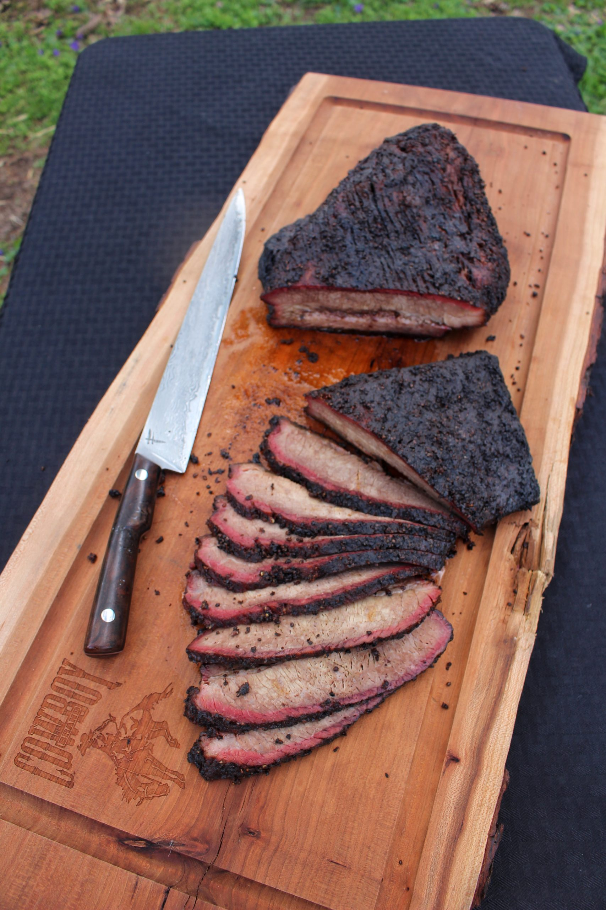

Texas Style Brisket

Description
Texas Style Brisket is steeped in Czech and German traditions brought to
the United States. Salt, pepper, and smoke are all that's required.
Ingredients
- Full packer brisket (10-17 lbs.)
- 1/4 cup coarse salt
- 1/4 cup coarse black pepper
- Enough smoking wood to run your smoker at 275 degrees F for ~12 hours
Steps
- Combine salt and pepper in shaker
- Apply salt and pepper liberally to all sides of the brisket
- Smoke at 275 degrees F until internal temperature reads 202 degrees F